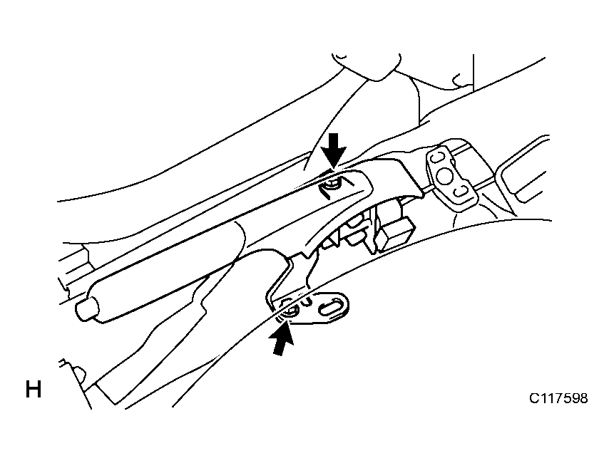

Parking Brake Lever: Removal
- REMOVE SHIFT LEVER KNOB SUB-ASSEMBLY (for Manual Transaxle)
- REMOVE STEREO JACK ADAPTER ASSEMBLY
- REMOVE REAR CONSOLE BOX COVER
- REMOVE CONSOLE BOX CARPET
- REMOVE REAR CONSOLE BOX ASSEMBLY (See
REMOVAL
)
- REMOVE NO. 1 WIRE ADJUSTING NUT
- Remove the lock nut and wire adjusting nut.
- REMOVE PARKING BRAKE LEVER SUB-ASSEMBLY
- Disconnect the parking brake switch connector.
- Disconnect the parking brake pull rod.
- Remove the 2 bolts and parking brake lever.
- REMOVE PARKING BRAKE SWITCH ASSEMBLY
- Remove the screw and parking brake switch.

Courtesy of © TOYOTA, LICENSE AGREEMENT TMS1002